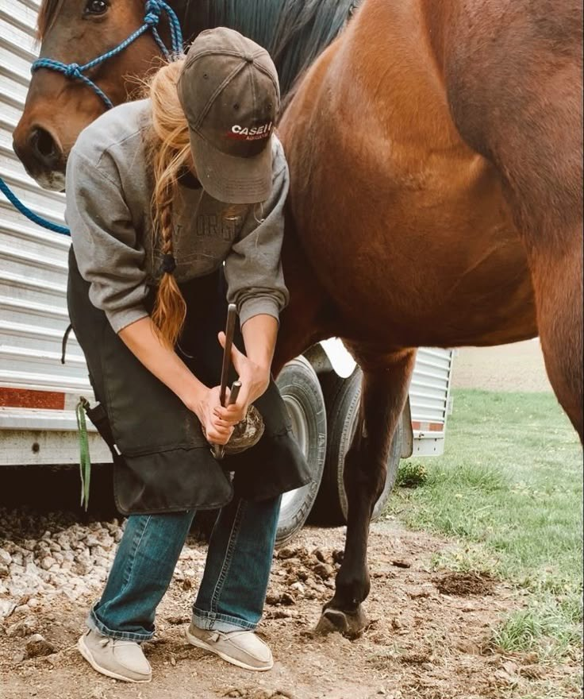

Welke opleiding heb je nodig?

Wil je hoefsmid worden? Dan volg je de mbo-opleiding Hoefsmid. Het is een opleiding op niveau 3 en duurt 3 jaar. In Nederland kun je hem op twee scholen volgen.
Waar kun je hem volgen?
- Aeres MBO in Barneveld. Je kunt kiezen uit BOL, dan leer je op school en loop je stage, of BBL, dan werk en leer je tegelijk.
- Zone.college in Zwolle. Ook hier kan het als BOL (voltijd) of als BBL (deeltijd).
Wat heb je nodig om te beginnen?
Bij Aeres MBO heb je een van deze diploma's nodig: een vmbo-diploma (kader, gemengd of theoretisch), een overgangsbewijs van havo of vwo van klas 3 naar 4, of een mbo-diploma op niveau 2, 3 of 4.
Wat leer je op school?
- Anatomie, bouw en beweging van het paard, vooral van de benen
- Hoefverzorging en bekappen
- Beslagtechnieken en het smeden van hoefijzers
- Werken met metaal en gereedschap
- Hoefziekten, diergezondheid en preventie
- Paarden beoordelen en ondernemerschap
Leren in de praktijk
Praktijk is verplicht. Bij BOL loop je stage in blokken of op losse dagen. Bij BBL werk je drie of vier dagen per week bij een erkend leerbedrijf, zoals een hoefsmederij, en ga je de andere dagen naar school.
Wat doe je tijdens je stage?
Je leert het echte werk van de hoefsmid: hoeven bekappen, paarden beslaan met hoefnagels en hoefijzers smeden of aanpassen. Daarvoor heb je handigheid, behendigheid en technisch inzicht nodig.
Na je diploma kun je aan de slag bij een hoefsmederij of een paardenkliniek, of je begint als zelfstandig hoefsmid.